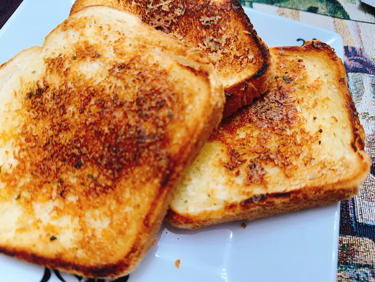

CopycatSizzlerCheeseToast

Description
This copycat Sizzler cheese toast is a quick add-on to round out any meal. Spread a quick cheese butter onto bread, toast in a hot skillet, and it's ready in about a minute.
Ingredients
- 2 tablespoons butter, softened
- 1/4 cup finely grated Romano cheese
- 1 pinch dried parsley
- 1 pinch garlic powder
- 3 slices artisan-style bread
Steps
- Stir softened butter, Romano cheese, parsley, and garlic powder together in a small bowl. Spread 2 teaspoons mixture on one side of each slice of bread.
- Place a heavy skillet over medium high heat, and add each slice of bread butter side down, and cook until golden brown, 45 seconds to 1 minute. Bread will be done very quickly. Check after 45 seconds.